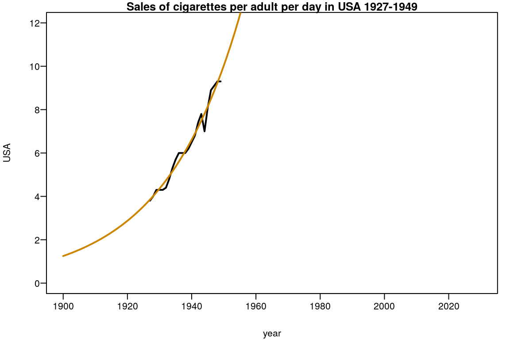
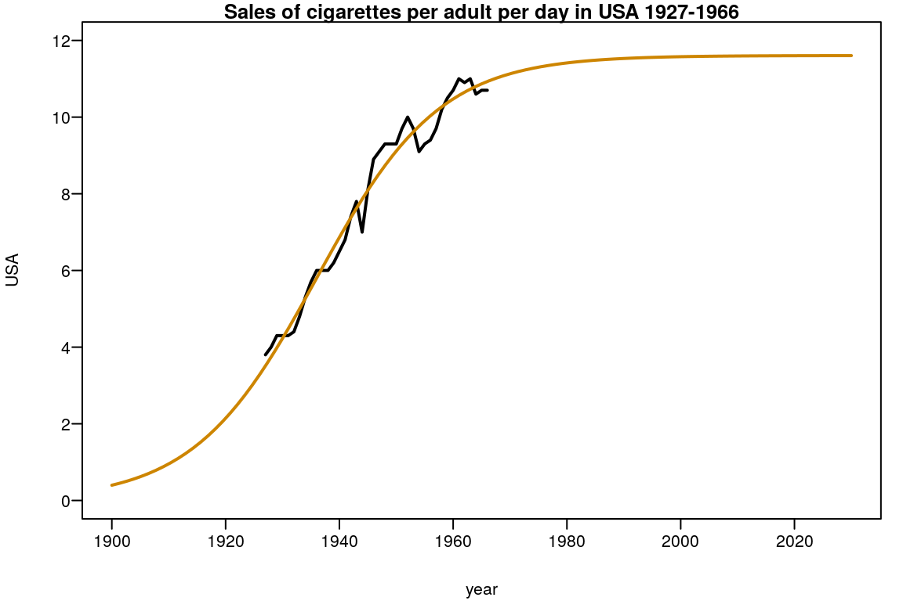
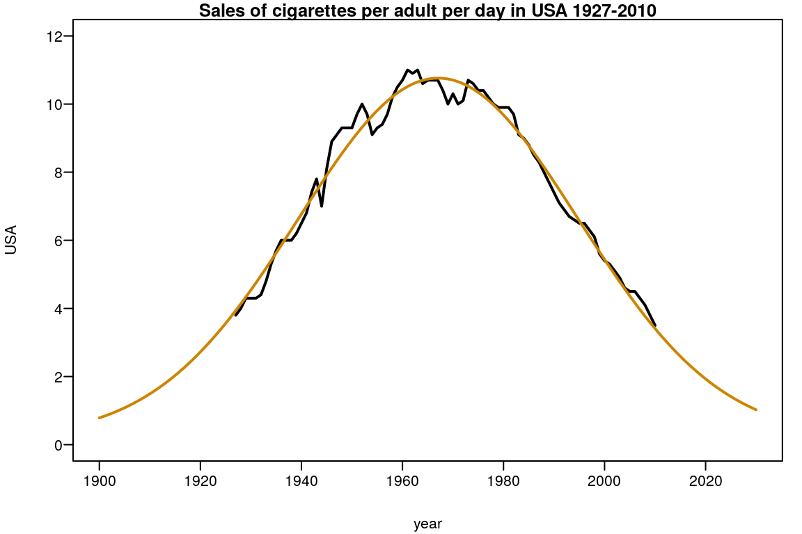
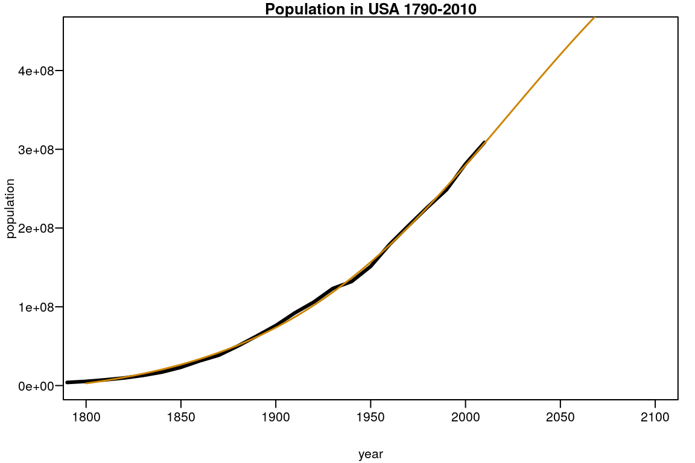

FitCurve-vignette.Rmd## Ładowanie wymaganego pakietu: bbmle## Ładowanie wymaganego pakietu: stats4## Ładowanie wymaganego pakietu: minpack.lmExponential function - SSexpo: \[f(x)=ab^x\]
Levenberg-Marquardt algorithm
##
## Formula: USA ~ SSexpo(year, a, b)
##
## Parameters:
## Estimate Std. Error t value Pr(>|t|)
## a 5.164e-35 1.503e-34 0.344 0.735
## b 1.043e+00 1.563e-03 667.049 <2e-16 ***
## ---
## Signif. codes: 0 '***' 0.001 '**' 0.01 '*' 0.05 '.' 0.1 ' ' 1
##
## Residual standard error: 0.2863 on 21 degrees of freedom
##
## Number of iterations to convergence: 33
## Achieved convergence tolerance: 1.49e-08Plot
with(plot(y=USA,x=year,type="l",lwd=2,
xlim=c(1900,2030),ylim=c(0,12)),
data=subset(smoking,year<="1949"))
title("Sales of cigarettes per adult per day in USA 1927-1949")
p <- coef(expo)
curve(SSexpo(x,p[1],p[2]),add=TRUE,col="orange3",lwd=2)
Logistic function - SSlogis: \[f(x)=\frac{Asym}{1+\exp{\left(\frac{xmid-x}{scal}\right)}}\]
\[xmid\]
Logistic function - SSlogis1: \[a=Asym,\quad b=\frac{xmid}{scal},\quad c=-\frac{1}{scal}\] \[f(x)=\frac{a}{1+\exp{(b+cx)}}\]
\[-b/c\]
Logistic function - SSlogis2: \[\alpha=Asym,\quad \beta=\exp{\left(\frac{xmid}{scal}\right)},\quad \gamma=\frac{1}{scal}\] \[f(x)=\frac{\alpha}{1+\beta\exp{(-\gamma x)}}\]
\[\ln(\beta)/\gamma\]
and other models of the drc package.
nl2sol algorithm
logi <- nls(USA~SSlogis(year,Asym,xmid,scal),
algorithm = "port",
data=subset(smoking,year<="1966"))
summary(logi)##
## Formula: USA ~ SSlogis(year, Asym, xmid, scal)
##
## Parameters:
## Estimate Std. Error t value Pr(>|t|)
## Asym 11.6067 0.3055 37.99 < 2e-16 ***
## xmid 1936.0129 0.6987 2770.70 < 2e-16 ***
## scal 10.7854 0.7887 13.67 4.84e-16 ***
## ---
## Signif. codes: 0 '***' 0.001 '**' 0.01 '*' 0.05 '.' 0.1 ' ' 1
##
## Residual standard error: 0.3808 on 37 degrees of freedom
##
## Algorithm "port", convergence message: both X-convergence and relative convergence (5)
## (7 observations deleted due to missingness)Plot
with(plot(y=USA,x=year,type="l",lwd=2,
xlim=c(1900,2030),ylim=c(0,12)),
data=subset(smoking,year<="1966"))
title("Sales of cigarettes per adult per day in USA 1927-1966")
p <- coef(logi)
curve(SSlogis(x,p[1],p[2],p[3]),add=TRUE,col="orange3",lwd=2)
Amplitude version of Gaussian peak function - SSgaussAmp: \[f(x)=y_{0}+A\exp{\left(\frac{-(x-x_c)^2}{2w^2}\right)}\]
\[x_L=x_c-\frac{1}{w},\quad x_U=x_c+\frac{1}{w}\]
Area version of Gaussian Function - SSgaussAre: \[f(x)=y_0+\frac{A}{w\sqrt{\pi/2}}\exp{\left(-2\frac{(x-x_c)^2}{w^2}\right)}\]
\[x_L=x_c-\frac{w}{2},\quad x_U=x_c+\frac{w}{2}\]
Gauss-Newton algorithm
##
## Formula: USA ~ SSgaussAmp(year, y0, A, xc, w)
##
## Parameters:
## Estimate Std. Error t value Pr(>|t|)
## y0 2.160e-01 8.058e-01 0.268 0.789
## A 1.055e+01 7.709e-01 13.681 <2e-16 ***
## xc 1.967e+03 2.070e-01 9503.255 <2e-16 ***
## w 3.602e-02 2.159e-03 16.685 <2e-16 ***
## ---
## Signif. codes: 0 '***' 0.001 '**' 0.01 '*' 0.05 '.' 0.1 ' ' 1
##
## Residual standard error: 0.3453 on 80 degrees of freedom
##
## Number of iterations to convergence: 0
## Achieved convergence tolerance: 3.273e-06
## (7 observations deleted due to missingness)Plot
with(plot(year,USA,type="l",lwd=2,
xlim=c(1900,2030),ylim=c(0,12)),
data=smoking)
title("Sales of cigarettes per adult per day in USA 1927-2010")
p <- coef(amp)
curve(SSgaussAmp(x,p[1],p[2],p[3],p[4]),add=TRUE,col="orange3",lwd=2)
Four-Parameter Logistic - SSfpl: \[f(x)=\frac{B-A}{1+\exp{\left(\frac{xmid-x}{scal}\right)}}+A\]
L-BFGS-B algorithm
fpl_nor <- mle2(population~dnorm(mean= SSfpl(year,A,B,xmid,scal),sd= sd),
start=list(A= p[1], B= p[2], xmid= p[3], scal= p[4], sd= 1),
method= "L-BFGS-B", data= population,
lower=c(A=-Inf,B=-Inf,xmid=-Inf,scal=-Inf,sd=0))
summary(fpl_nor)## Maximum likelihood estimation
##
## Call:
## mle2(minuslogl = population ~ dnorm(mean = SSfpl(year, A, B,
## xmid, scal), sd = sd), start = list(A = p[1], B = p[2], xmid = p[3],
## scal = p[4], sd = 1), method = "L-BFGS-B", data = population,
## lower = c(A = -Inf, B = -Inf, xmid = -Inf, scal = -Inf, sd = 0))
##
## Coefficients:
## Estimate Std. Error z value Pr(z)
## A -1.8602e+07 2.6759e-07 -6.9516e+13 < 2.2e-16 ***
## B 7.0910e+08 1.1997e-07 5.9108e+15 < 2.2e-16 ***
## xmid 2.0232e+03 6.8818e-01 2.9400e+03 < 2.2e-16 ***
## scal 6.3851e+01 5.8831e-01 1.0853e+02 < 2.2e-16 ***
## sd 3.0839e+06 1.7273e-08 1.7855e+14 < 2.2e-16 ***
## ---
## Signif. codes: 0 '***' 0.001 '**' 0.01 '*' 0.05 '.' 0.1 ' ' 1
##
## -2 log L: 752.5912Plot
with(plot(year,population,type="l",lwd=3,
xlim=c(1800,2100),ylim=c(0,45e+07)),
data=population)
title("Population in USA 1790-2010")
p <- coef(fpl_nor)
curve(SSfpl(x,p[1],p[2],p[3],p[4]),add=TRUE,col="orange3",lwd=1.5)
Logistic function - SSlogis: \[f(x)=\frac{Asym}{1+\exp{\left(\frac{xmid-x}{scal}\right)}}\]
L-BFGS-B algorithm
logi_nor <- mle2(population~dnorm(mean= SSlogis(year,Asym,xmid,scal),sd= sd),
start=list(Asym= p[1], xmid= p[2], scal= p[3], sd= 1),
method= "L-BFGS-B", data= population,
lower=c(Asym=-Inf,xmid=-Inf,scal=-Inf,sd=0))
summary(logi_nor)## Maximum likelihood estimation
##
## Call:
## mle2(minuslogl = population ~ dnorm(mean = SSlogis(year, Asym,
## xmid, scal), sd = sd), start = list(Asym = p[1], xmid = p[2],
## scal = p[3], sd = 1), method = "L-BFGS-B", data = population,
## lower = c(Asym = -Inf, xmid = -Inf, scal = -Inf, sd = 0))
##
## Coefficients:
## Estimate Std. Error z value Pr(z)
## Asym 4.8395e+08 1.7409e-07 2.7799e+15 < 2.2e-16 ***
## xmid 1.9850e+03 7.3770e-01 2.6907e+03 < 2.2e-16 ***
## scal 4.8011e+01 7.6244e-01 6.2970e+01 < 2.2e-16 ***
## sd 4.7571e+06 3.2690e-09 1.4552e+15 < 2.2e-16 ***
## ---
## Signif. codes: 0 '***' 0.001 '**' 0.01 '*' 0.05 '.' 0.1 ' ' 1
##
## -2 log L: 772.5275Plot
SSexpo - exponential model: \[f(x)=ab^x\]
SSexpoGen - general exponential model: \[f(x)=a\exp{(bx)}\]
SSexpoInv - exponential inverse model: \[f(x)=a\exp{\left(b\frac{1}{x}\right)}\]
SSgaussAmp - amplitude of gaussian model: \[f(x)=y_{0}+A\exp{\left(\frac{-(x-x_c)^2}{2w^2}\right)}\]
SSgaussAre - area of gaussian model: \[f(x)=y_0+\frac{A}{w\sqrt{\pi/2}}\exp{\left(-2\frac{(x-x_c)^2}{w^2}\right)}\]
SShyper - hyperbolic model: \[f(x)=\frac{ax^2}{x+b}\]
SSlogis1 - logistic model: \[f(x)=\frac{a}{1+\exp{(b+cx)}}\]
SSlogis2 - logistic model: \[f(x)=\frac{\alpha}{1+\beta\exp{(-\gamma x)}}\]
SSlorentz - lorentz model: \[f(x)=y_0+A\frac{2w}{\pi4(x-x_c)^2+w^2}\]
SSparLog - parabola logarithmic model: \[f(x)=ax^{b+c\ln(x)}\]
SSpower - power model: \[f(x)=ax^b\]
SSpowExpo - power-exponential model: \[f(x)=ax^b\exp{(cx)}\]
SSpowExpoInv - power-exponential-inverse model: \[f(x)=ax^b\exp{\left(c\frac{1}{x}\right)}\]
SSpsVoigt1 - Pseudo-Voigt model: \[f(x)=y_0+A\left[\nu\frac{2w}{\pi4(x-x_c)^2+w^2}+(1-\nu)\frac{\sqrt{4\ln 2}}{\sqrt{\pi}w}\exp\left(-\frac{4\ln 2}{w^2}(x-x_c)^2\right)\right]\]
SSpsVoigt2 - Pseudo-Voigt model with different FWHM (\(w_L\) and \(w_G\)): \[f(x)=y_0+A\left[\nu\frac{2w_L}{\pi4(x-x_c)^2+w_L^2}+(1-\nu)\frac{\sqrt{4\ln 2}}{\sqrt{\pi}w_G}\exp\left(-\frac{4\ln 2}{w_G^2}(x-x_c)^2\right)\right]\]
SStorn1 - Tornquist I model: \[f(x)=\frac{ax}{x+b}\]
SStorn2 - Tornquist II model: \[f(x)=\frac{a(x-c)}{x+b}\]
SStorn3 - Tornquist III model: \[f(x)=\frac{ax(x-c)}{x+b}\]
SSworking - Working model: \[f(x)=\exp{\left[a+b\left(\frac{1}{x}\right)\right]}\]